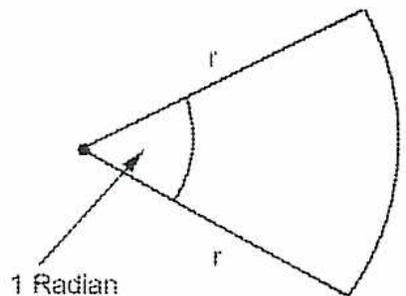
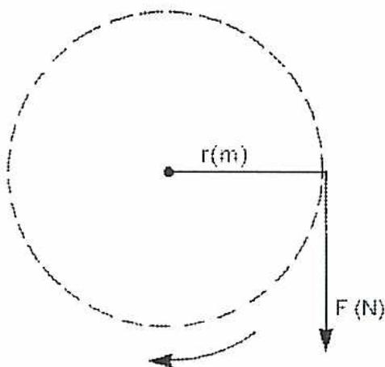
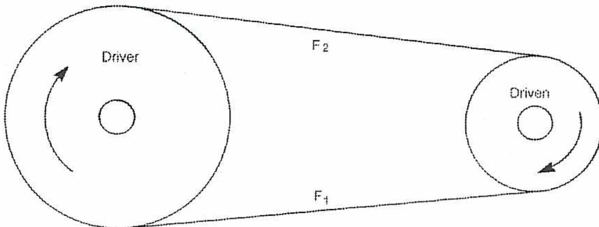
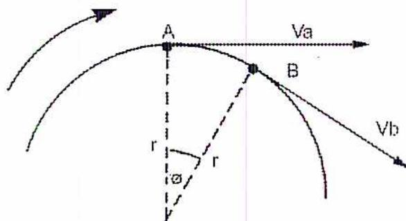
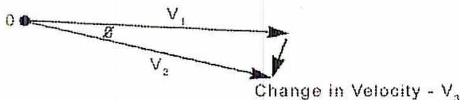
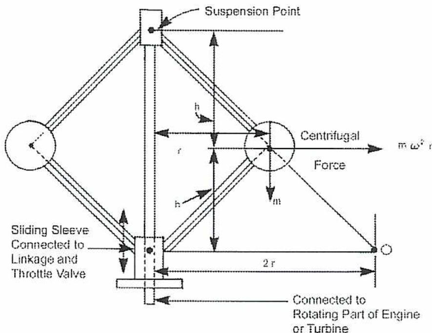
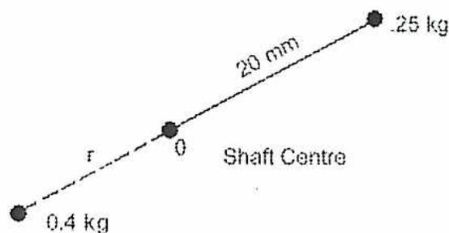
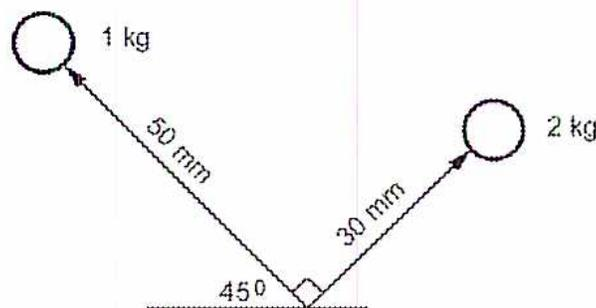
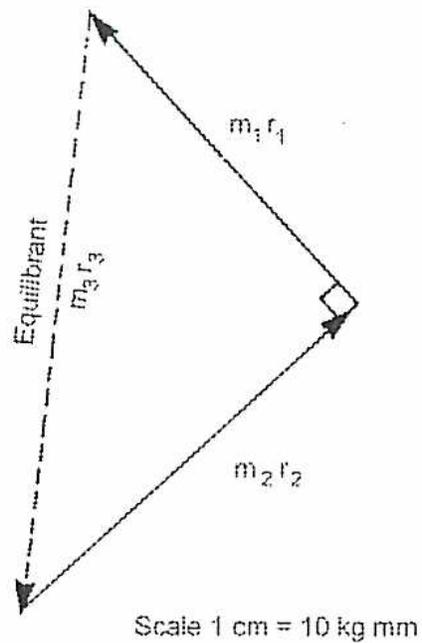

Angular Motion
9
Learning Outcome
When you complete this learning material, you will be able to:
Apply the theory of applied mechanics to bodies in angular motion.
Learning Objectives
You will specifically be able to complete the following tasks:
- 1. Define and calculate angular displacement, angular velocity and angular acceleration.
- 2. Define and calculate moment of inertia, radius of gyration and torque.
- 3. Define and calculate the kinetic energy of rotating masses.
- 4. Define work and power. Calculate brake power and mechanical efficiency of a reciprocating engine.
- 5. Calculate the power transmitted by a belt drive.
- 6. Define centrifugal and centripetal force, centripetal acceleration, and perform calculations involving them.
- 7. Calculate the distance of movement of a governor due to centrifugal force.
- 8. Calculate how to balance a rotating mass.
Objective 1
Define and calculate angular displacement, angular velocity, and angular acceleration.
INTRODUCTION
Angular motion, where a rigid body rotates around a fixed axis, is a very important form of motion. All types of rotating equipment have this type of motion, for example, rotors in gas turbines, pumps and compressors and shafts and flywheels in reciprocating engines and compressors.
ANGULAR DISPLACEMENT
The displacement of a rotating body is determined by the angle through which it rotates. The angle of rotation is measured by a unit of measure called the radian. As illustrated in Fig. 1, the radian is the angle obtained when the radius is equal to the length of the arc circumscribed by a circle with that radius.

A diagram showing a sector of a circle. Two straight lines (radii) extend from a central point to the circumference, both labeled with the variable 'r'. A curved line (arc) connects the ends of these radii, also labeled with 'r'. The angle between the two radii at the center is marked with an arc and labeled '1 Radian'.
Figure 1
Definition of a Radian
Since the circumference of a circle is \( 2\pi r \) , there are \( 2\pi \) radians in a complete circle or revolution. The appropriate formula is
$$ \theta \text{ (rad)} = 2\pi \times \theta \text{ (rev)} $$
A radian is equal to \( 57.2958^\circ \) or 0.159 revolutions.
The conventional symbol for angular displacement is \( \theta \) (theta).
ANGULAR VELOCITY
Angular velocity is a scalar quantity that describes the angular distance moved in a given time interval. It is normally measured in rad/s (radians/second).
The conventional symbol for angular velocity is \( \omega \) (omega).
Since the rotation of engines is usually measured in revolutions per minute, it is often necessary to convert between radians and revolutions.
$$ \omega \text{ (rad/s)} = \frac{2\pi \text{ rad/rev}}{60 \text{ s/min}} \times n \text{ (rev/min)} $$
If a rotating object increases from an initial angular velocity \( \omega_i \) to a final angular velocity \( \omega_f \) , then the average angular velocity will be:
$$ \omega_{ave} = \frac{\omega_i + \omega_f}{2} $$
The angular displacement can be calculated from the average angular velocity by the formula:
$$ \text{Angular displacement} = \text{Average angular velocity} \times \text{time} $$
$$ \theta = \omega_{ave} \times t $$
Substituting, the result is
$$ \theta = \frac{\omega_i + \omega_f}{2} \times t $$
Example 1
What is the angular velocity of a flywheel rotating at 240 rpm?
Answer
Using the following formula:
$$ \begin{aligned}\omega &= \frac{2\pi \text{ rad/rev}}{60 \text{ s/min}} \times n \text{ rev/min} \\ &= \frac{2\pi}{60} \times 240 \\ &= 25.133 \text{ rad/s (Ans.)}\end{aligned} $$
ANGULAR ACCELERATION
Angular acceleration is a scalar quantity that describes the change in angular velocity in a given time interval. It is normally measured in \( \text{rad/s}^2 \) (radians/second 2 ).
The conventional symbol for angular acceleration is \( \alpha \) (alpha).
If the change in angular velocity is uniform over the time period, then the angular acceleration or deceleration is constant.
$$ \text{Angular acceleration} = \frac{\text{Final angular velocity} - \text{Initial angular velocity}}{\text{Time interval}} \quad \text{or} $$
$$ \alpha = \frac{\omega_f - \omega_i}{t} $$
Example 2
A flywheel starts rotating from rest and reaches a speed of 200 rpm in 60 seconds. What will be the average angular velocity and angular acceleration?
Answer
Convert rpm to rad/s:
$$ \begin{aligned}\omega_f \text{ (rad/s)} &= \frac{2\pi}{60} \times n \\ &= \frac{2\pi}{60} \times 200 \\ &= 20.94 \text{ rad/s}\end{aligned} $$
Average angular velocity:
$$ \begin{aligned}\omega_{ave} &= \frac{\omega_i + \omega_f}{2} \\ &= \frac{0 + 20.94}{2} \\ &= 10.47 \text{ rad/s (Ans.)}\end{aligned} $$
The angular acceleration is then determined:
$$ \begin{aligned}\alpha &= \frac{\omega_f - \omega_i}{t} \\ &= \frac{20.94 - 0}{60} \\ &= 0.349 \text{ rad/s}^2 \text{ (Ans.)}\end{aligned} $$
Example 3
A pulley wheel of 1 m diameter, rotating at 300 rpm, is brought to rest in 10 seconds.
Determine:
- The average angular velocity during run down
- The angular acceleration
- The number of revolutions made before stopping.
Answer
- The average angular velocity during run down.
Convert rpm to rad/s:
$$ \begin{aligned}\omega_i \text{ (rad/s)} &= \frac{2\pi}{60} \times n \\ &= \frac{2\pi}{60} \times 300 \\ &= 31.42 \text{ rad/s}\end{aligned} $$
Average angular velocity:
$$ \begin{aligned}\omega_{ave} &= \frac{\omega_i + \omega_f}{2} \\ &= \frac{31.42 + 0}{2} \\ &= 15.71 \text{ rad/s} \text{ (Ans.)}\end{aligned} $$
b) Angular acceleration (or actually deceleration)
$$ \begin{aligned}\alpha &= \frac{\omega_f - \omega_i}{t} \\ &= \frac{0 - 31.42}{10} \\ &= -3.142 \text{ rad/s}^2 \text{ (Ans.)}\end{aligned} $$
c) The number of revolutions made before stopping.
The angular displacement in radians is
$$ \begin{aligned}\theta &= \frac{\omega_i + \omega_f}{2} \times t \\ &= \frac{31.42 + 0}{2} \times 10 \\ &= 157.1 \text{ rad}\end{aligned} $$
Since it is customary to convert this to revolutions, the angular displacement is:
$$ \begin{aligned}\theta \text{ (rev)} &= \frac{\theta \text{ (rad)}}{2\pi} \\ &= \frac{157.1}{2\pi} \\ &= 25.00 \text{ revolutions}\end{aligned} $$
Note that none of the answers are dependent on the diameter of the pulley.
Objective 2
Define and calculate moment of inertia, radius of gyration and torque.
MOMENT OF INERTIA
When an object moves in linear motion, its inertia is concentrated in the center of mass of the object and moves in the same path as the object. To calculate momentum and work, it is often possible to assume a force acting at the center of mass and to ignore the distribution of mass in the object.
When an object such as a flywheel or a shaft is rotating around its axis, matters are somewhat more complicated since the mass is distributed around the axis at different distances from the center of rotation. This leads to the need to define a moment of inertia that is dependent on the shape of the object and the axis of the rotation.
The moment of inertia is “the mass of a body multiplied by the square of its distance from a given point”.
Formulas to calculate the moment of inertia have been developed for a variety of common shapes and can be found in textbooks. As an example, the moment of inertia for a rotating disk such as a flywheel is defined as:
$$ I = mr^2 $$
The mass is in kg and the flywheel is assumed to be of uniform density. The radius is in meters. Therefore, the units for inertia are \( \text{kg m}^2 \) .
RADIUS OF GYRATION
Once the moment of inertia has been determined, it is convenient to define an equivalent radius at which the mass can be assumed to be concentrated. This is called the radius of gyration. In formula form, it is defined as
$$ k = \sqrt{\frac{I}{m}} $$
For the flywheel example, the radius of gyration can be derived by substituting formulas, to give:
$$ \begin{aligned} k &= \sqrt{\frac{I}{m}} \\ &= \sqrt{\frac{\frac{1}{2}mr^2}{m}} \\ &= \sqrt{\frac{1}{2}r^2} \\ &= 0.707r \end{aligned} $$
Example 4
A flywheel with a mass of 300 kg and a radius of 1 meter rotates at 300 rpm. What are the moment of inertia and radius of gyration?
Answer
The moment of inertia is found:
$$ \begin{aligned} I &= mr^2 \\ &= 300 \times 1^2 \\ &= \mathbf{300 \text{ kg m}^2} \text{ (Ans.)} \end{aligned} $$
The radius of gyration:
$$ \begin{aligned} k &= 0.707r \\ &= 0.707 \times 1 \\ &= \mathbf{0.707 \text{ m}} \text{ (Ans.)} \end{aligned} $$
TORQUE
In angular motion, there is a specific way of looking at the force that is applied to a rotating body. This is referred to as torque which is a measure of how much a force acting on a body causes it to rotate (see Fig. 2). Torque \( T \) is defined as the product of force and radial distance or
$$ T = F \times r $$
The unit is Nm (Newton meter) which is also known as a Joule. However, for torque, Nm is used instead of Joule to avoid confusion. Energy is a scalar quantity while torque is a vector.

Figure 2
Definition of Torque
It is important to note that the force used in the torque formula is tangential or perpendicular to the radius. If the force acts in a different direction, the tangential component has to be determined to calculate torque. If the direction of the force acts through the center of rotation of the body, then the torque will be zero.
Example 5
A force of 70 N is applied to a wheel with a diameter of 1 m. What is the torque?
Answer
The torque is calculated as
$$ \begin{aligned} T &= F \times r \\ &= 70\text{N} \times 1\text{m} \\ &= 70\text{ Nm (Ans.)} \end{aligned} $$
TORQUE AND ANGULAR ACCELERATION
If a body is rotating and a force is applied with no counteracting force, the body will accelerate (or decelerate if the force is applied in the opposite direction of rotation). The acceleration or deceleration is described by Newton's Second Law or the formula \( F = ma \) . Since the linear and angular acceleration are related by the formula,
$$ a\text{ (m/s}^2\text{)} = \alpha\text{ (rad/s}^2\text{)} \times r\text{ (m)} $$
then force is described by the formula:
$$ F = m\alpha r $$
This is the force applied at radius \( r \) . If the force is applied at radius \( L \) , the formula is changed to:
$$ FL = m\alpha r^2 $$
As \( F \times L \) is the torque causing the acceleration, the formula can be written as:
$$ T = m\alpha r^2 $$
Since the mass is rarely concentrated only at the rim, it may be necessary to use the radius of gyration \( k \) which then results in the formula:
$$ T = m\alpha k^2 $$
Substituting, the torque causing the acceleration can be expressed in terms of the moment of inertia and angular acceleration:
$$ \begin{aligned} T &= m\alpha k^2 \\ \sqrt{T} &= m\alpha k \\ \sqrt{T} &= m\alpha \sqrt{\frac{I}{m}} \\ T &= m\alpha \frac{I}{m} \\ T &= I\alpha \end{aligned} $$
Comparing the linear and angular versions of Newton's Second Law, torque is analogous to force, moment of inertia is analogous to mass and linear acceleration is analogous to angular acceleration.
Example 6
A flywheel with a mass of 200 kg is brought from standstill to 600 rpm in 40 seconds. If the radius of gyration is 500 mm, what torque is required?
Answer
Convert rpm to rad/s:
$$ \begin{aligned} \omega_f \text{ (rad/s)} &= \frac{2\pi}{60} \times n \\ &= \frac{2\pi}{60} \times 600 \\ &= 62.83 \text{ rad/s} \end{aligned} $$
The angular acceleration is determined:
$$ \begin{aligned}\alpha &= \frac{\omega_f - \omega_i}{t} \\ &= \frac{62.84 - 0}{40} \\ &= 1.571 \text{ rad/s}^2\end{aligned} $$
The torque is then derived:
$$ \begin{aligned}T &= m\alpha k^2 \\ &= 200 \times 1.571 \times 0.5^2 \\ &= 78.55 \text{ Nm (Ans.)}\end{aligned} $$
Objective 3
Define and calculate the kinetic energy of rotating masses.
KINETIC ENERGY
Kinetic energy is the ability to do work due to the motion of a body.
The kinetic energy \( E_k \) can be calculated by the following formula which was derived in the module on linear motion (PE2-1-8)
$$ E_k = \frac{1}{2}mv^2 $$
It is customary to express the velocity in terms of angular velocity as expressed by the formula
$$ v = \omega r $$
The radius used is the radius of gyration \( r = k \) as described in the previous objective.
The formula for kinetic energy then becomes
$$ K = \frac{1}{2}mv^2 $$
$$ K = \frac{1}{2}m\omega^2k^2 $$
The units for kinetic energy are the same as those for work, Joules.
Example 7
A flywheel with a mass of 500 kg and a radius of gyration of 0.5 meter rotates at 150 rpm. What is the kinetic energy?
Answer
Convert rpm to rad/s:
$$ \begin{aligned}\omega \text{ (rad/s)} &= \frac{2\pi}{60} \times n \\ &= \frac{2\pi}{60} \times 150 \\ &= 15.71 \text{ rad/s}\end{aligned} $$
The kinetic energy is then calculated:
$$ \begin{aligned}K &= \frac{1}{2} m \omega^2 k^2 \\ &= \frac{1}{2} \times 500 \times 15.71^2 \times 0.5^2 \\ &= 15.425 \text{ kJ (Ans.)}\end{aligned} $$
Objective 4
Define work and power. Calculate brake power and mechanical efficiency of a reciprocating engine.
WORK
The work performed by a rotating body is derived from the normal formula for work which is force times distance. In this case, the distance is the circular distance traveled by the applied force. For angular motion, this means that for one revolution:
$$ W = F \times 2\pi r $$
Using the formula for torque, the work for multiple revolutions \( \theta \) becomes
$$ W = 2\pi T\theta $$
POWER
Whereas work is rarely calculated for rotating bodies, power is very important. Since power is the rate of doing work, the power related to speed \( n \) in rpm will be:
$$ P = 2\pi T \frac{n}{60} $$
Substituting, it can also be expressed in terms of angular velocity \( \omega \) (rad/s) which gives the formula:
$$ P = T\omega $$
BRAKE POWER
The power of an engine is usually measured at the output shaft. It is normally referred to as brake power because a device called a rope brake is often used to measure the shaft power. An example of a rope brake is shown in Fig. 3.
![Figure 3: Rope Brake. The diagram shows two views of a rope brake setup. On the left, a rectangular block labeled 'Engine' is connected to a vertical shaft. A rope is wrapped around a pulley on the shaft. One end of the rope is attached to a fixed support, and the other end is attached to a weight. On the right, a more detailed view shows a 'Spring Balance - S (N)' at the top, a 'Brake Drum (Water Cooled)' in the middle, and an 'Engine Shaft' passing through the center. A rope is wrapped around the drum, with one end connected to the spring balance and the other to a 'Load W (N)'. The radius of the drum is labeled 'r'.](fbfaa723129f8b8e3be651c6fe7cfab7_img.jpg)
Figure 3
Rope Brake
As shown in Fig. 3, the rope is turned once around a flywheel or brake drum which is water cooled to dissipate the heat produced by the brake. One end of the rope is tied to a spring balance and the other end is attached to a weight. The difference between the force of the weight and the force measured by the spring balance is the force applied by the friction produced. With the radius of the flywheel known, the torque can be calculated which, combined with the angular velocity, determines the power output.
If the force measured by the spring is \( S \) (newtons) and the force of the load is found from mass \( \times \) acceleration due to gravity or \( mg \) , the net force is \( mg - S \) . The brake power measured by the rope brake will be
$$ P_{brake} = 2\pi(mg - S)r \frac{n}{60} $$
Example 8
A brake power test was carried out using a brake with a radius of 600 mm and a weight with a mass of 25 kg. The engine was rotating at 360 rpm and the reading on the spring balance was 50 N. What is the brake power produced?
Answer
The brake power is found:
$$ \begin{aligned}P_{brake} &= 2\pi(mg - S)r \frac{n}{60} \\&= 2\pi(25 \times 9.81 - 50)0.6 \times \frac{360}{60} \\&= 4416.5 \text{ W} \\&= 4.42 \text{ kW (Ans.)}\end{aligned} $$
MECHANICAL EFFICIENCY
Due to friction and mechanical losses, the power available at the output shaft is less than that indicated at the cylinder. The ratio of the brake and indicated power is called the mechanical efficiency and is in the range of 90-95%.
Therefore, the mechanical efficiency is defined as:
$$ \text{Mechanical efficiency (\%)} = \frac{\text{Brake power}}{\text{Indicated power}} \times 100 \text{ or} $$
$$ \eta_m = \frac{P_b}{P_i} \times 100 $$
Example 9
The indicated power for an engine is calculated at 7500 kW. The brake power is measured as being 7000 kW. What is the mechanical efficiency of the engine?
Answer
The mechanical efficiency is:
$$ \begin{aligned}\eta_m &= \frac{P_b}{P_i} \times 100 \\&= \frac{7000}{7500} \times 100 \\&= 93.3\% \text{ (Ans.)}\end{aligned} $$
Objective 5
Calculate the power transmitted by a belt drive.
TRANSMISSION OF POWER BY BELT DRIVES
Power may be transmitted over short distances by means of pulleys connected by belts. If the belts are tight enough and there is sufficient surface area where the belt touches the pulley, the friction will be high enough that the belts will not slip and the velocities of the belt and the pulley will be the same.
Since belts will stretch when subjected to force, one side will be tighter than the other. In the case of the pulleys and belt shown in Fig. 4, force \( F_1 \) will be higher than \( F_2 \) and the effective driving force will be \( F_1 - F_2 \) newtons.

A diagram of a belt drive system. It consists of two circular pulleys connected by a single belt. The larger pulley on the left is labeled "Driver" and has a clockwise rotation arrow. The smaller pulley on the right is labeled "Driven" and has a counter-clockwise rotation arrow. The belt is labeled
\( F_2 \)on the top (tight side) and
\( F_1 \)on the bottom (loose side).
Figure 4
Belt Drive
The power can be calculated from the formula:
$$ P = 2\pi(F_1 - F_2)r \frac{n}{60} $$
It should be mentioned that the calculation can be done on either the driving or driven pulley. Since the velocity of the pulley is constant, the rotational speed will vary in proportion to the radius of the pulley.
Example 10
A pulley of 300 mm diameter is driven at 200 rpm by a belt. The tension on the tight side is 2000 N and the tension on the slack side is 500 N. Neglecting the thickness of the belt, what is the power transmitted?
Answer
The power transmitted is:
Given:
Radius of the pulley = 150 mm
Speed of the pulley = 200 rpm
Tension on right side = 2000 N
Tension on slack side = 500 N
$$ \begin{aligned} P &= 2\pi(F_1 - F_2)r \frac{n}{60} \\ &= 2\pi(2000 - 500) \times 0.15 \times \frac{200}{60} \\ &= 4712 \text{ W} \\ &= \mathbf{4.712 \text{ kW}} \text{ (Ans.)} \end{aligned} $$
If the belt thickness is taken into account, the radius will be increased by half of the belt thickness. Assuming a belt thickness of 15 mm, the new radius will be 157.5 mm and the power transmitted increases to
$$ \begin{aligned} P &= 2\pi(F_1 - F_2)r \frac{n}{60} \\ &= 2\pi(2000 - 500) \times 0.1575 \times \frac{200}{60} \\ &= 4948 \text{ W} \\ &= \mathbf{4.948 \text{ kW}} \text{ (Ans.)} \end{aligned} $$
Objective 6
Define centrifugal and centripetal force, centripetal acceleration and perform calculations involving them.
CENTRIPETAL/CENTRIFUGAL FORCES
Newton's first law of motion states that an object in motion tends to stay in motion, with the same speed and in the same direction, unless acted upon by an unbalanced force. For example, a stone is fastened to the end of a string and whirled around in a circular path. Inward forces must be constantly exerted to keep it travelling in the circle even though the stone itself is exerting an outward radial pull.
Centrifugal Force
Centrifugal force is the outward radial force created by the stone, travelling in a circular path, having the tendency to fly off and travel in a straight line.
Centripetal Force
Centripetal force is the inward pull that is required to counteract the outward radial force and keep the stone on its circular path. The centripetal force must be equal in magnitude to the centrifugal force but act in an opposite direction (Newton's third law of motion). Centripetal and centrifugal forces can be calculated from Newton's Second Law.
$$ \text{Force} = \text{mass} \times \text{acceleration} $$
or
$$ F_c = \frac{mv^2}{r} \text{ or } = m\omega^2 r $$
The units of measure are:
\( m \) = mass, kg
\( v \) = velocity, m/s
\( r \) = radius, m
\( \omega \) = angular velocity, rad/s
\( F \) = force, N
Referring to Fig. 5, a body moves at a constant speed of \( v \) around a circle of radius \( r \) . At the instant the body passes point \( A \) , its velocity is \( v \) in the direction tangential to the circle at \( A \) . As the body passes point \( B \) , its velocity is now \( v \) tangential to the circle at \( B \) . Even though the body maintains a constant speed, its velocity has changed due to there being a change in direction.

Figure 5
Rotating Velocity Vectors
Consider the movement from point \( A \) to \( B \) be through the angle \( \theta \) . To calculate the change in velocity, the velocities vector diagram is drawn, as shown in Fig. 6.

Figure 6
Velocity Vectors Diagram
Note that \( V_1 = V_2 \) . Since \( \theta \) is considered a small angle, the triangle base angles are almost \( 90^\circ \) . For small angles, \( \sin \theta \approx \tan \theta \approx \theta \) radians.
$$ \sin \theta = \frac{V_3}{V_1} $$
$$ \tan \theta = \frac{V_3}{V_2} $$
$$ V_3 = V_1 \sin \theta $$
$$ V_3 = V_2 \tan \theta $$
$$ \text{Since } V_1 = V_2 $$
$$ V_3 = V \sin \theta $$
$$ = V \tan \theta $$
$$ = V \theta \text{ rad} $$
CENTRIPETAL ACCELERATION
Since the body is travelling at constant speed, its acceleration is due to the constantly changing velocity (by changing direction) as the body travels around its circular path. This acceleration, directed toward the center of the circle, is referred to as centripetal acceleration .
The change in velocity is equal to \( V\theta \text{ rad} \) . With a change in velocity, there is acceleration. The time for the body to travel from one velocity vector to the next one is determined by:
$$ \begin{aligned} a \text{ to } b &= \frac{\text{distance}}{\text{speed}} \\ &= \frac{r\theta}{v} \\ \text{Acceleration} &= \frac{\text{change in velocity}}{\text{time}} \\ &= v\theta \div \frac{r\theta}{v} \\ &= \frac{v\theta \times v}{r\theta} \\ &= \frac{v^2}{r} \end{aligned} $$
Due to the circular motion, the velocity of the body can be expressed in angular measurement \( \omega \text{ rad/s} \) instead of linear units, \( v \) . Therefore, this relationship is \( v = \omega r \) .
Substituting this value for \( v \) :
$$ \begin{aligned} \text{Centripetal acceleration} &= \frac{v^2}{r} \\ &= \frac{\omega^2 r^2}{r} \\ a_c &= \omega^2 r \end{aligned} $$
The units of measure for centripetal acceleration are \( \text{m/s}^2 \) which is not to be confused with the units for angular acceleration which are \( \text{rad/s}^2 \) .
Example 11
A mass of 5 kg rotates at 200 rpm in a radius of 500 mm. What are the centripetal acceleration and force?
Answer
Convert rpm to rad/s:
$$ \begin{aligned}\omega \text{ (rad/s)} &= \frac{2\pi}{60} \times n \\ &= \frac{2\pi}{60} \times 200 \\ &= 20.94 \text{ rad/s}\end{aligned} $$
The centripetal acceleration is found:
$$ \begin{aligned}a_c &= \omega^2 r \\ &= 20.94^2 \times 0.5 \\ &= \mathbf{219.24 \text{ m/s}^2} \text{ (Ans.)}\end{aligned} $$
The centripetal force is obtained:
$$ \begin{aligned}F &= m\omega^2 r \\ &= 5 \times 20.94^2 \times 0.5 \\ &= \mathbf{1096.2 \text{ N}} \text{ (Ans.)}\end{aligned} $$
CENTRIFUGAL FORCES IN ROTATING EQUIPMENT
Substantial forces are created in rotating components in machinery by centrifugal forces. For this reason, speed limitations are always placed on rotating machinery often with overspeed protection to prevent mechanical failure.
Example 12
An axial compressor rotates at 6000 rpm. On one of the stages of the compressor, the mass of a blade is 0.1 kg and the center of mass is 0.75 m from the center of rotation. What is the centrifugal force on the blade?
Answer
First convert rpm to rad/s:
$$ \begin{aligned}\omega \text{ (rad/s)} &= \frac{2\pi}{60} \times n \\ &= \frac{2\pi}{60} \times 6000 \\ &= 628.32 \text{ rad/s}\end{aligned} $$
The centrifugal force is then obtained:
$$ \begin{aligned}F_c &= m\omega^2 r \\ &= 0.1 \times 628.32^2 \times 0.75 \\ &= 29609 \text{ N} \\ &= \mathbf{29.61 \text{ kN}} \text{ (Ans.)}\end{aligned} $$
Objective 7
Calculate the distance of movement of a governor due to centrifugal force.
GOVERNORS
A governor is a device used to control the speed of an engine. It was introduced by Isaac Watt to control the steam engine and several versions have become common on different types of engines. Mechanical governors are now being replaced by electronic versions.
Fig. 7 illustrates the principles associated with a Watt governor. The sliding sleeve is connected to a mechanism which is attached to a throttle valve that controls steam or fuel flow. When the speed is zero, the sliding sleeve drops and the balls or 'bobs' are in their inward position. The throttle is fully open at this point. As the speed increases, the bobs move outward due to centrifugal force and the throttle valve closes until a point of equilibrium is reached. If an increase in load causes a drop in speed, the governor will cause the throttle to open and to re-establish the original speed.

The diagram illustrates a mechanical governor, specifically a Watt governor. It consists of a central vertical shaft connected to the rotating part of an engine or turbine. At the top of the shaft is a suspension point. Two links are pivoted at this point, each ending in a spherical bob. The distance from the vertical shaft to the center of each bob is labeled \( r \) . The total distance between the centers of the two bobs is labeled \( 2r \) . As the shaft rotates, the bobs move outward due to centrifugal force, represented by a horizontal arrow labeled "Centrifugal Force" and the formula \( m \omega^2 r \) . The weight of each bob is represented by a downward arrow labeled \( m \) . The bobs are connected to a sliding sleeve on the vertical shaft via a linkage mechanism. The sliding sleeve is labeled "Sliding Sleeve Connected to Linkage and Throttle Valve". The vertical distance from the suspension point to the sliding sleeve is labeled \( h \) .
Figure 7
Mechanical Governor
To know the position of the throttle for a certain speed, it is important to calculate the height of the weights, also known as the height of the governor shown as \( h \) in Fig. 7. One way to calculate the forces is to take the moment around the point O. The clockwise moments consist of the centrifugal force multiplied by the height or
$$ \text{clockwise moments} = m\omega^2 rh $$
The anticlockwise moment is determined by the force of gravity acting on the mass of the bob, therefore:
$$ \text{anticlockwise moments} = mgr $$
Since the clockwise and anticlockwise moments will be in equilibrium at the governed speed, the two moments are equal and the final formula for the height is
$$ \text{clockwise moments} = \text{anticlockwise moments} $$
$$ m\omega^2 rh = mgr $$
$$ h = \frac{g}{\omega^2} $$
It is interesting to note that the height is not dependent on the mass of the bob but only on the force of gravity and the speed.
Example 13
A Watt governor rotates at 100 rpm. What is the height of the governor?
Answer
Convert rpm to rad/s:
$$ \begin{aligned}\omega \text{ (rad/s)} &= \frac{2\pi}{60} \times n \\ &= \frac{2\pi}{60} \times 100 \\ &= 10.47 \text{ rad/s}\end{aligned} $$
The height will be:
$$ \begin{aligned}h &= \frac{g}{\omega^2} \\ &= \frac{9.81}{10.47^2} \\ &= 0.0895 \text{ m} \\ &= 89.5 \text{ mm (Ans.)}\end{aligned} $$
Objective 8
Calculate how to balance a rotating mass.
BALANCING A SINGLE MASS
If rotating masses such as turbine rotors are not balanced, significant centrifugal forces are created which produces excessive vibration and can cause major damage. If the unbalance is located at one position, it is possible to counteract it by providing an equal mass at the opposite location and the same distance from the center of rotation. In reality this is not usually practical, but it is possible to calculate a moment that will cancel out the net unbalance by placing an equivalent mass at the appropriate radius.
Example 14
A shaft has an unbalance of 0.25 kg at a radius of 20 mm from the center of rotation. At what radius and position in the same plane should a mass of 0.4 kg be placed for balance?
Answer
Fig. 8 shows the situation graphically.

The diagram shows a straight line representing a shaft. At the center, there is a point labeled '0' and 'Shaft Centre'. To the right, along the line, is a point labeled '0.25 kg' at a distance of '20 mm' from the center. To the left, along the line, is a point labeled '0.4 kg' at a distance of 'r' from the center. The line extends beyond both masses.
Figure 8
Unbalance with Single Mass
Taking moments about the center of rotation shown by O, the solution will be
$$ \begin{aligned} 0.25 \times 20 &= 0.4 \times r \\ r &= 12.5 \text{ mm} \end{aligned} $$
The compensating mass is placed in the opposite direction to the unbalanced mass.
BALANCING OF MULTIPLE ROTATING MASSES
When considering a number of rotating masses, the direction of the masses has to be taken into account. A vector diagram can be used to determine the direction and location of the mass needed to provide the counterbalance.
Example 15
A mass of 1 kg at a radius of 50 mm is at an angle of \( 90^\circ \) to another mass of 2 kg at a radius of 30 mm as shown in Fig. 9. What mass would be required at a radius of 45 mm for balance?

The diagram shows a central point with two vectors originating from it. The first vector, labeled '1 kg', has a length of '50 mm' and points upwards and to the left, making an angle of '45°' with a horizontal dashed line. The second vector, labeled '2 kg', has a length of '30 mm' and points upwards and to the right. A right-angle symbol indicates that the 2 kg mass is at a \( 90^\circ \) angle to the 1 kg mass.
Figure 9
Unbalance with Dual Masses
Answer
The moment of force for each mass is:
$$ \begin{aligned} m_1 r_1 &= 1 \times 50 \\ &= 50 \text{ kg mm} \end{aligned} $$
$$ \begin{aligned} m_2 r_2 &= 2 \times 30 \\ &= 60 \text{ kg mm} \end{aligned} $$
The moment vectors are drawn in Fig. 10 and the equilibrant moment is measured to be 78 kg mm with the direction as shown.

Figure 10
Vector Solution
It can also be calculated as follows
$$ \begin{aligned} m_3 r_3 &= \sqrt{m_1 r_1 + m_2 r_2} \\ m_3 r_3 &= \sqrt{50^2 + 60^2} \\ &= \sqrt{2500 + 3600} \\ &= 78.1 \text{ kg mm} \end{aligned} $$
The mass can then be calculated:
$$ \begin{aligned} m_3 r_3 &= 78.1 \text{ kg mm} \\ m_3 &= \frac{78.1}{45} \\ &= 1.736 \text{ kg (Ans.)} \end{aligned} $$
Note: if the two known moment vectors do not form a right angled triangle, as in the previous example, then the sine and/or cosine laws would be used to solve the oblique equilibrium triangle.
- 1. What is the angular velocity of a flywheel rotating at 200 rpm?
- 2. Define the moment of inertia and describe what is meant by the radius of gyration.
- 3. A force of 50 N is applied to a wheel with a diameter of 2 m. What is the torque?
- 4. The mass of a flywheel is 125 kg and its radius of gyration is 400 mm. Calculate the kinetic energy stored when rotating at 150 and 350 rpm, respectively.
- 5. A crane engine lifts a 420 kg mass to a height of 10 m in 1.74 minutes. The indicated power of the engine is 416 W. What is the mechanical efficiency of the engine?
- 6. A pulley, 300 mm in diameter, is driven at 350 rpm by a belt 15 mm thick. The tensions in the tight and slack sides of the belt are 1800 and 500 N respectively. Considering the thickness of the belt, find the power transmitted.
- 7. Describe centripetal and centrifugal force and indicate the difference between them.
- 8. Find the change in height of a Watt governor when it changes speed from 80 to 120 rpm.
- 9. A shaft is found to have an unbalance of 0.5 kg at a radius of 100 mm from the center of rotation. At what radius and position in the same plane should a mass of 1 kg be placed for balance?